Oarai, Ibaraki: things to do, food and stays
Oarai · Ibaraki
Oarai
Highlighted on the Ibaraki map.

Stay
大洗ホテル
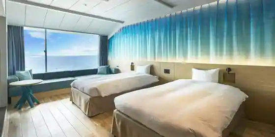
Oarai Hotel
Hotel in Isohama, Oarai with scenic views.
里海邸 金波楼本邸
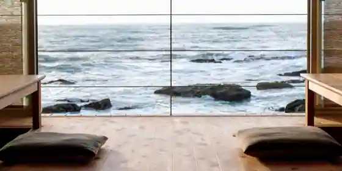
Sato Umi Tei Kinpa Ro Hontei
Inn in Isohama, Oarai with scenic views.
Doggy's Coast Oarai
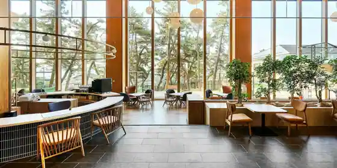
Doggy's Coast Oarai
亀の井ホテル 大洗
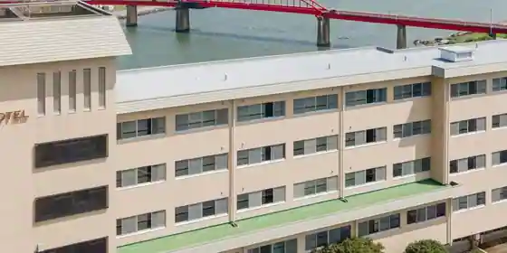
Kame No I Hotel Oarai
大洗パークホテル
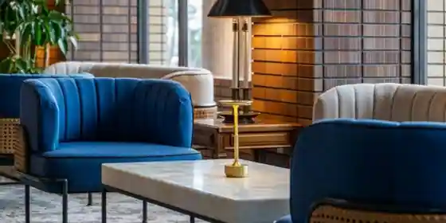
Oarai Park Hotel
Hotel in Isohama, Oarai with a sauna.
COCO VILLA 大洗
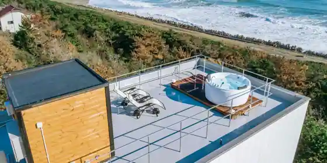
COCO VILLA Oarai
サンライズヴィラ大洗
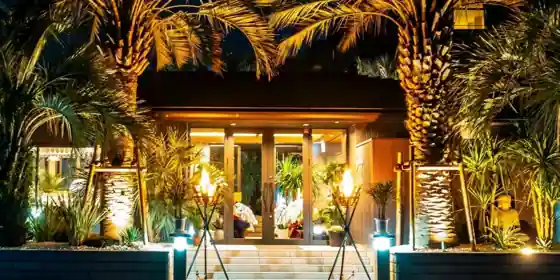
Sanraizu Villa Oarai
割烹旅館 肴屋本店
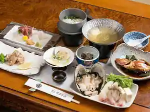
Kappo Ryokan Sakanaya Hon
Ryokan inn in Isohama, Oarai with local seafood dinners.
旅館民宿 足袋豊
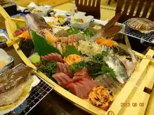
Ryokan Minshuku Tabi Yutaka
Ryokan inn at Ritomineraru Onsen in Isohama, Oarai.
浜の湯
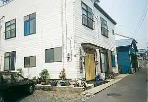
Hama No Yu
Inn in Isohama, Oarai with business travelers.
旅館・民宿 大勘荘
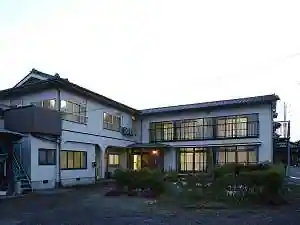
Ryokan Minshuku Dai Kan So
Ryokan inn in Onuki, Oarai with local seafood dinners.
民宿 鯖芳
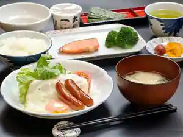
Minshuku Saba Ho
Dining
ちゅう心
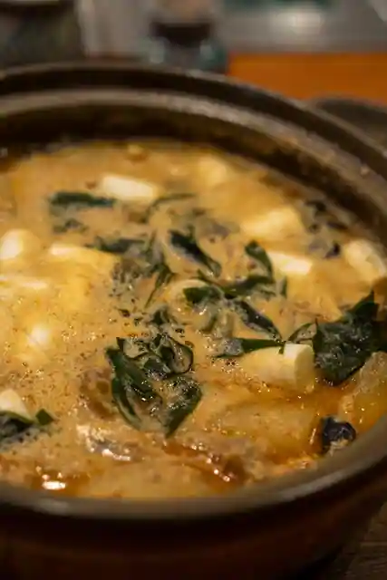
Chu Kokoro
味処 大森
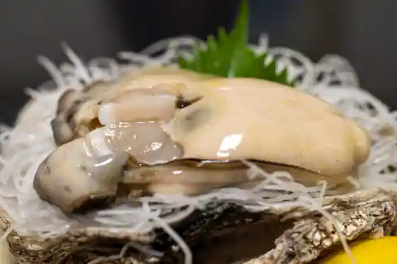
Ajidokoro Omori
里海邸
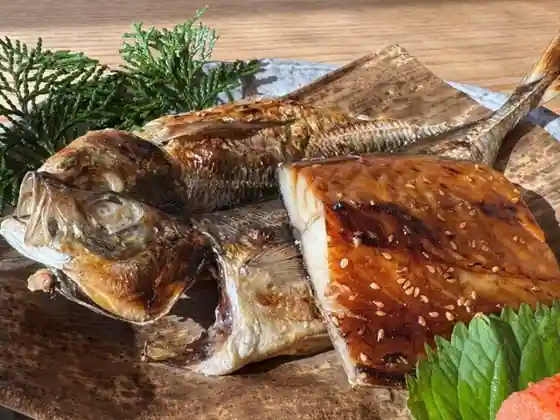
Sato Umi Tei
悠久
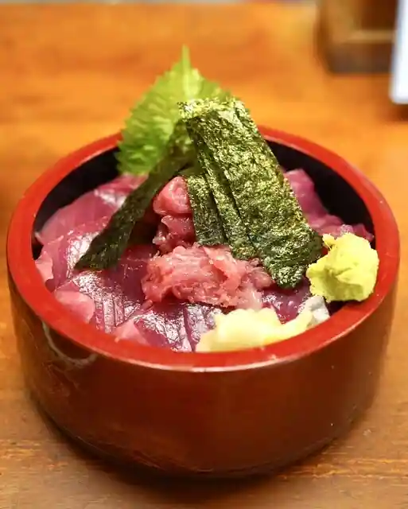
Yukyu
たけちゃん
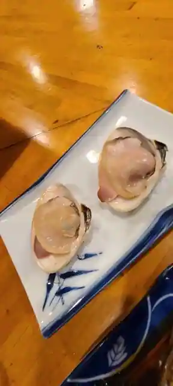
Takechan
松のぶ
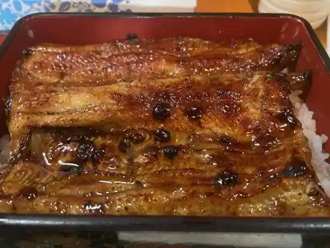
Matsu Nobu
大洗町漁協 かあちゃんの店
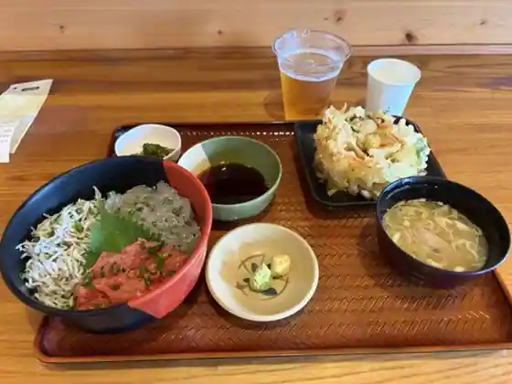
Oarai Machi Gyokyo Kachanno
味の店 たかはし
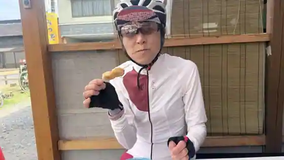
Aji No Takahashi
めんたいパーク 大洗
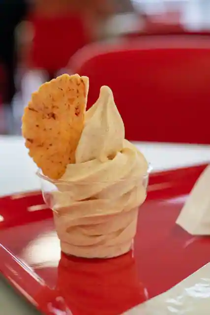
Mentai Park Oarai
お魚天国 海鮮食事処
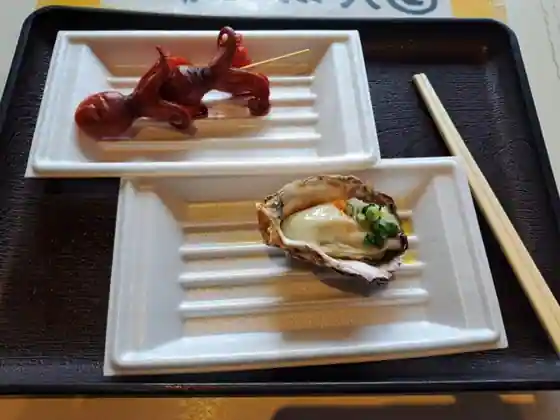
O Sakana Tengoku Kaisen Shokuji Tokoro
カキ小屋
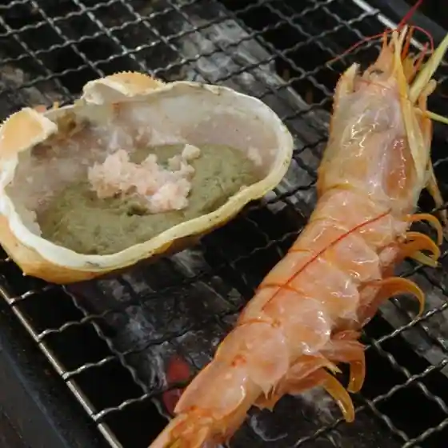
Kaki Koya
かに弥
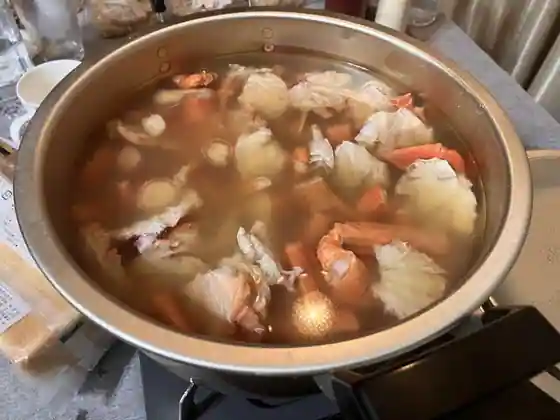
Kani Ya
カニと海鮮丼 かじま
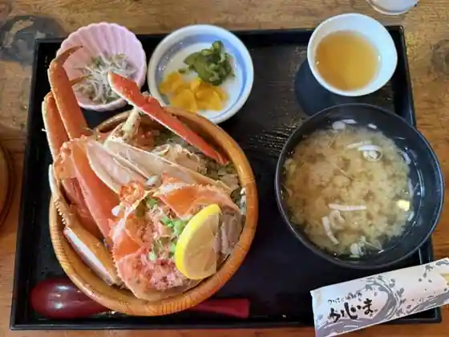
Kani To Kaisen Donburi Kajima
井中
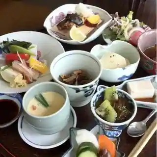
I Naka
海鮮どんぶり亭
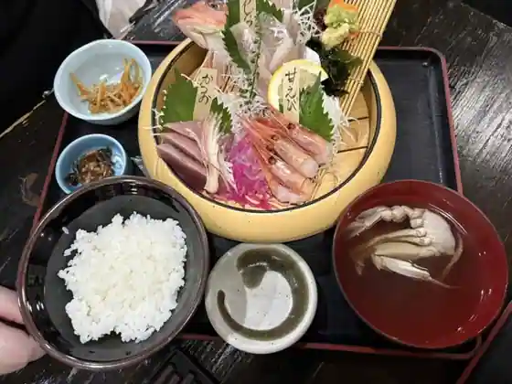
Kaisen Donburi Tei
潮騒の湯
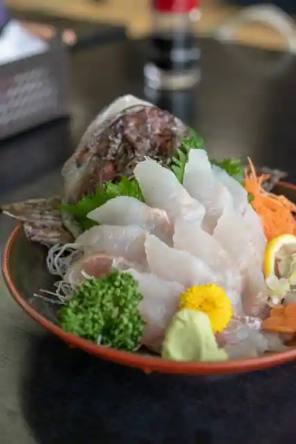
Shiosai No Yu
えんやどっと丸
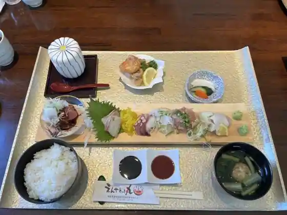
Enyadotto Maru
海鮮処 森田 大洗店
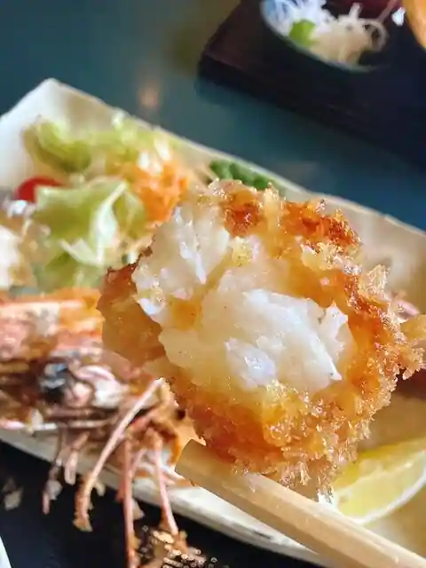
Kaisen Tokoro Morita Oarai
麺屋 渡来人
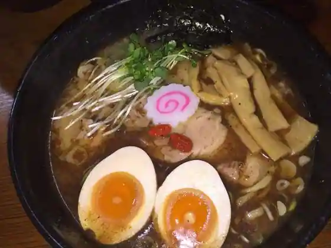
Men Ya Toraijin
山水
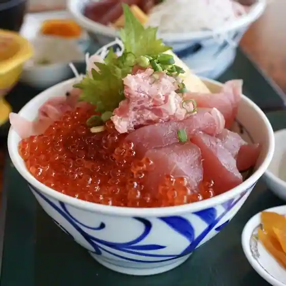
Sansui
魚留
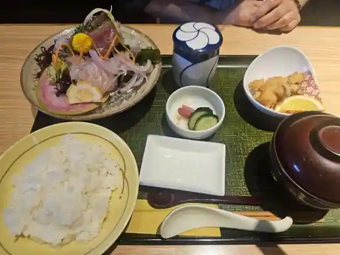
Sakana Ryu
ROMII DONUT STORE
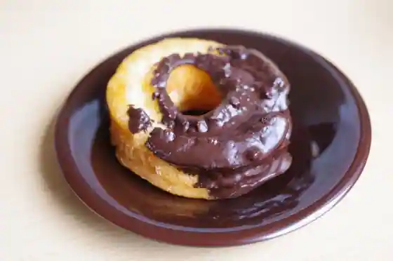
ROMII DONUT STORE
飯岡屋水産 大洗 海・山・直売センターいきいき店
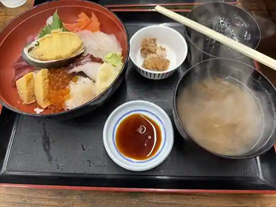
Ioka Ya Suisan Oarai Umi Yama Chokubai Center Ikiki
土びん
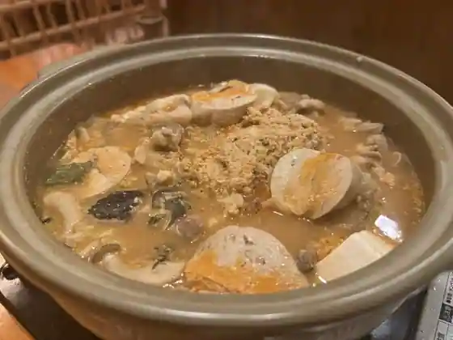
Tsuchi Bin
Sights
Akuawarudo Ibarakiken Oarai Aquarium
Jun Sai Aji Kokoro Kikuchi

Iso Ryori Sansui

O Sakana Tengoku Kaisen Shokuji Tokoro

Kama Ie

Ajidokoro Omori
Oarai Kamome Matsu Tei
Oarai Coast
Jun no Aji
Aji Yoshi
Aji Goyomi Miyata
Oarai Yamaguchi Ro
Sato Umi Tei Kinpa Ro Hontei
Resort Oarai Matsumoto
Kobayashi Ro
Oarai Kenko Fukushi Center Yukkura Kenko Kan
Oarai Beriizu
Sushi Shabushabu Chu Kokoro
Oarai Shinise Sushi Mise Kurisaki Ya
Oarai Onsen Tobita So
IRIFUNE (Irifune)
Oarai Marintawa
Oarai San Beach Beach
Oarai Iso Mae Shrine
Shiosai Baths
Oarai Bakumatsu to Meiji no Museum
Oarai Wakuwaku Science Museum
NPO Hojin Oarai Umi no Daigaku
Oarai Campground
Kanefuku Mentai Park
Gatsu no I Shuzo
Oarai Feriitaminaru
Oarai Kaiyo Museum
Oarai Art Museum
Mito Hakkei (Gan Fune Sekisho)
Gannyu Tera Kaiki Do Museum
Gannyu Tera
Umeboshi Tsukemono Yoshidaya
Oarai San Beach Campground
Taiheiyo Asoshieitsu Oarai Shauddokosu
JA Mito Oarai Chiku Nosambutsu Chokubai Tokoro
Iioka Ya Suisan Main Shop
O Bento no Mannen Ya Akuawarudo Oarai Mise
Teuchi Soba Hitachi Ya
Oyashio
Oarai Gyokyo (Kachan no Mise)
O Sakana Tengoku Oarai Hamakko Shokudo
O Sakana Tengoku Oarai Hamakko Shokudo
Oarai Umiyama Chokubai Center Ikiiki Iioka Ya Suisan
O Sakana Tengoku Kaitenzushi
Kaisen Tokoro Morita Oarai Mise
Asahi Do
Oarai Maiwai Market
Oarai Kankojoho Koryu Center (Umimachi Terasu)
Doggy's Coast Oarai
Torattoria j Mariina
Guranmare Ibaraki Oarai
Suger Beach Oarai
Ume Sonare OARAI